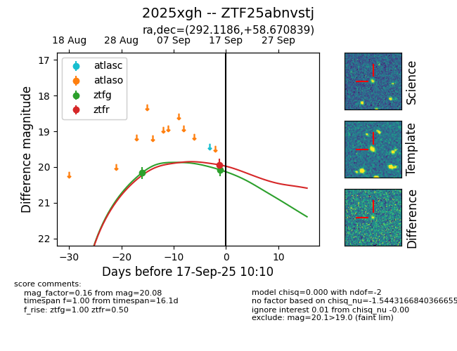

FINK: ZTF25abnvstj
Lasair: ZTF25abnvstj
ALeRCE: ZTF25abnvstj
TNS: 2025xgh
YSE: 2025xgh
ZTF25abnvstj (ztf,fink)
2025xgh (tns,yse)
equatorial (ra, dec) = (292.1186,+58.67084)
galactic (l, b) = (90.1997,+18.36333)

last ztfg=20.08, ztfr=20.15
2 ztfg, 2 ztfr detections